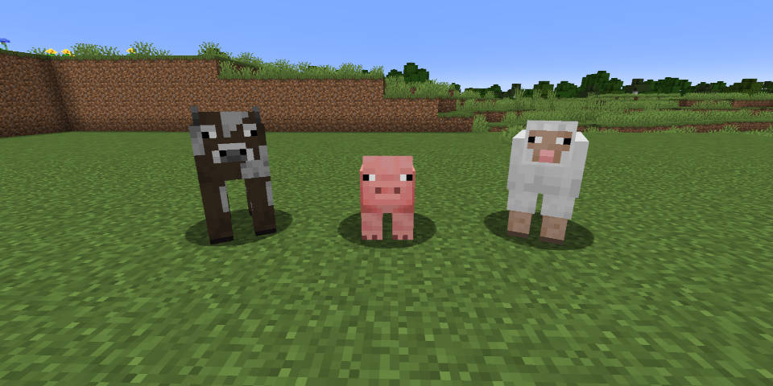
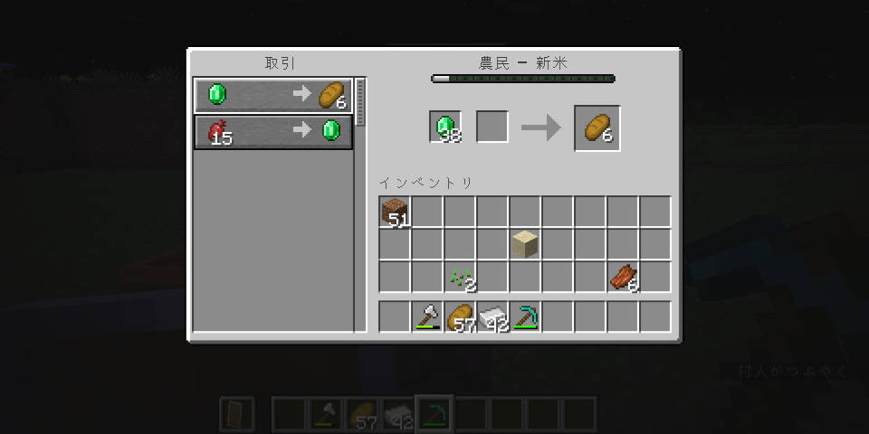
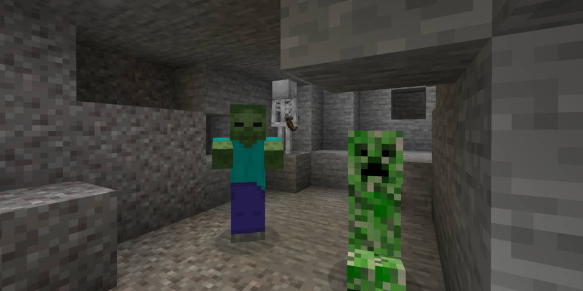
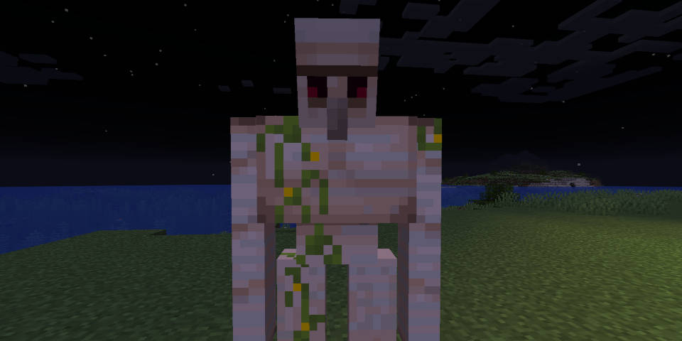

友好モブについて
友好モブとはプレイヤーに攻撃しないモブのことです。主に牛や豚、羊、ニワトリなどがいます。友好モブは特にたくさん食料を落としてくれます。牛が落としてくれる牛肉をかまどで焼いたステーキをたべると、ととてもたくさんの空腹ゲージが回復しますウマやロバなどは、村人との取引に使う皮を落としてくれます。（「村人について」で詳しく説明）
友好モブの村人について
村人は、「エメラルド」などの鉱石、「パン」「ニンジン」などの食べ物、「コンパス」「剣」などの日常品を一定の村人に右クリックすることで交易することができます
敵対モブについて
敵対モブとは主に夜に出現するモブのことです。代表的なモブとしては、ゾンビ、クリーパー、スケルトンがいます。敵対モブに攻撃されるなどして死んでしまうと、作ったツールなどが死んだ場所に落ちてしまいます。そのためはじめのうちは敵対モブから逃げるようにすることをおすすめします。
中立モブについて
中立モブは攻撃したらてきたプレイヤーに敵対するモブです。ピースフルの場合攻撃しても敵対しません。アイアンゴーレムは鉄を落としてくれたりゾンビピッグマンは金の剣や金塊を落としてくれます。ただしゾンビピッグマンは一人をたたくと近くにいる仲間と集団で襲ってくるので気を付けてください。ゾンビピッグマンはネザーにいます。
